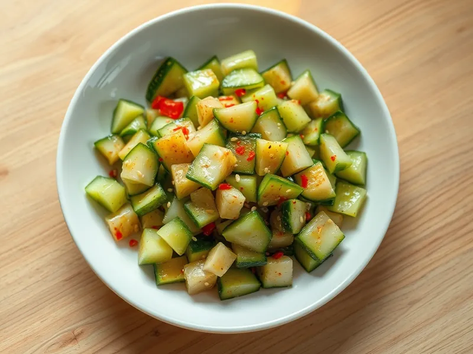

Битые огурцы по-китайски с чесноком
Огурцы, расколотые ножом, в остро-кислой заправке из соевого соуса, уксуса и чесночного масла
20 мин3 порц.135 ккал на порциюБ 2 · Ж 10 · У 9Азиатская кухня
Открыть в приложении: порции, таймеры, список покупок
Продукты на 3 порц.
- Огурцы4 шт
- Чеснок3 зуб.
- Соевый соус2 ст. л.
- Рисовый уксус1 ст. л.
- Сахар1 ч. л.
- Кунжутное масло1 ст. л.
- Растительное масло1 ст. л.
- Острый перец молотый0,5 ч. л.
- Кунжут по желанию1 ч. л.
- Соль0,7 ч. л.
Как готовить
- Положите огурец на доску, накройте плоской стороной широкого ножа и ударьте ладонью, чтобы он треснул. Разрежьте на куски 3 см.
- Посыпьте огурцы солью, перемешайте и оставьте на 10 минут, затем слейте выделившийся сок.
- Чеснок мелко порубите и положите в миску с острым перцем.
- Разогрейте растительное масло на среднем огне 1-2 минуты до лёгкой дымки и залейте им чеснок с перцем: он зашипит и запахнет.
- Добавьте соевый соус, уксус, сахар и кунжутное масло, размешайте до растворения сахара.
- Залейте огурцы заправкой, перемешайте, посыпьте кунжутом и подавайте сразу или через 15 минут в холодильнике.
Совет. Огурцы именно бейте, а не режьте: на неровных сколах заправка впитывается лучше. Долго не держите, через несколько часов они теряют хруст.